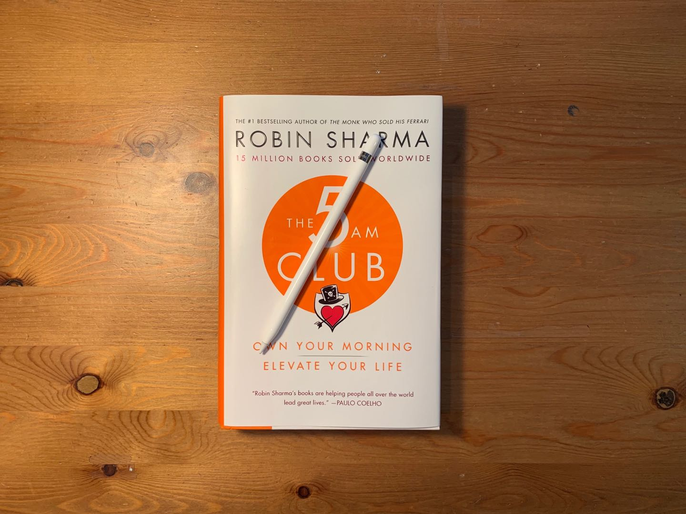

The 5AM Club
Robin Sharma
By Henry Wang | June 9, 2019
What is The 5AM Club about?
In a nutshell, this book is a story of an entrepreneur and artist learning from a billionaire who The book begins with an entrepreneur and artist meeting up at a seminar starring a powerful speaker known as The Spellbinder. Here, they meet a homeless man who made unusual sense in the principles he was talking about. The two then accepted his invitation to attend his private training program in Mauritius.
When they arrived, they learn that the homeless man was a billionaire whose mentor was The Spellbinder himself. He simply dressed raggedly to keep himself “strong, disciplined, and focused on the central few priorities (his) life’s built around.” They begin and continue learning from the billionaire different places in the world, such as the Taj Mahal, Rome, and even Robben Island. It is during these sections where readers take on the roles of the artist and entrepreneur.
When I was reading The 5AM Club, I felt as if I was an observer right next to the artist and entrepreneur, taking in any new knowledge and principles I could.
Design
As you can see from the brief summary above, Sharma decided to include his teachings and knowledge in the form of a story. When reading, I felt as if I was an observer right next to the artist and entrepreneur, taking in any concepts and information I could. This is probably the most unique aspect of The 5AM Club.
I love the beautifully designed front cover of the book with its signature quote “Own your morning. Elevate your life.” Other small, beautiful touches include the professional, hand drawn diagrams and learning models that immersed me into the story and concepts and aided my understanding even further!
If I were to be picky, the only thing I find troublesome with the design is the dialogue in the billionaire’s teaching. In order for fluctuations between speakers, Sharma would have the billionaire teach a concept for a paragraph’s length and the entrepreneur or artist saying that they agree or talking about how this will really impact their life. The one problem with this is that the billionaire hasn’t finished discussing the idea yet! These small interruptions really disrupt my flow I try to maintain when reading; however, it doesn’t hamper my understanding of the concepts and information discussed.
Quality of Content
Quality of Information
Sharma overdelivered in The 5AM Club. From the billionaire’s lessons to the Spellbinder’s speech, the author’s teachings can be seen everywhere. Most principles in the book can be applied by everyone, whether if you are a CEO, a student, or someone building a side hustle. Sharma equally shares unique tips on waking up early in the morning with other content such as building a habit, balancing work and rest, and increasing your willpower, discipline, and legacy.
A myriad of concepts is a benefit and can be a small disadvantage as well. Although I like to see unique information in a book, too much of it hinders my ability to remember important ones. I constantly found myself going back to previous pages to see if there were important quotes I didn’t catch.
Other than this small problem, I greatly appreciate and value the quality of content!
Takeaways
The main purpose of The 5AM Club is to show how waking up early and doing the right activities is the best way to prime the rest of your day. Society’s general view on success and entrepreneurship include hustling, working long hours, and not enjoying life until you are rich; many of my biggest takeaways contradict this. Enough talk - here are three of my favorite concepts:
The 20/20/20 Formula
In a nutshell, the 20/20/20 formula tells us to spend the first 20 minutes of our day exercising, the next 20 minutes reflecting, and the final 20 minutes learning. Exercising first in the morning gives us the focus and attention we need for reflection and learning later in the day. It also extends your lifespan, which I’ve never heard about before this read! After exercise, reflection helps us cool down. During this section, write about what you are thankful for, what stressful things are on your mind, and what you want the day ahead to look like. Last but not least, spend the 20 minutes of learning reading a book, watching a recording of a seminar, or listening to an audiobook.
Your Brain Builds Itself During Rest
In The 5AM Club, Sharma uses the metaphor of how the brain is a muscle. Like all muscles, it tears during exercise and builds a better version of itself during rest. Due to this, using only the 6 – 7 hours of sleep per day for rest simply isn’t enough. It is because of this that downtime during the day is so important.
During these periods, Sharma suggests for us to avoid technology. Activities include going for a nature walk, taking a well-deserved power nap, or reading a book. Counterintuitively, I find going to the center of a city, enjoying the bustle, and taking a stroll while observing what others are doing to be very relaxing. These activities increase our willpower, attention, and discipline for the tasks ahead.
This is one of my favorite takeaways since it prevented a major continuation of burnout and illness problems in my life by proving to me that rest should be prioritized equally as work.
Enjoy Life Before Retirement
Sharma states that although it’s important to constantly strive towards achieving your potential and changing our world for the better, it is equally necessary to find time enjoying life. Such activities include experiencing nature on an outdoors trip, occasionally rewarding ourselves with nice things, and spending time with our loved ones. The amount of time you have with these people is slowly decreasing. You will never know if an event restrains you from being with them in the future.
Sharma encourages us to not underestimate these activities because doing them will actually increase your prosperity and wealth. Enjoying life will give you a reason to go through your day and keep hitting those tasks with purpose.
Language
Sharma uses eloquent but simple language for almost every phrase in this book. All quotes are poetically written, even if the idea he is trying to convey is very simple. The vocabulary in this read isn’t too difficult either; you will definitely be able to understand the concepts and information in this book if English is your first language. For non-native speakers like me, watch one of Sharma’s free seminar videos and see if you can understand what he says. The way he writes is almost identical to how he talks, so your understanding of the novel should be fine if you get what he’s talking about.
Although eloquent language is something I truly appreciate, it does come with one small downside. When I began my journey through this read, it took some time for me to get used to Sharma’s speaking/writing style. There would often be times where I read a sentence but did not fully understand what he was trying to say due to the flow of the words and ideas. My understanding immediately improved as I began to underline key words and reread difficult lines; however, it wasn’t to the point where I could read one of his lengthy, complexly worded sentences and immediately understand his point.
Again, this is a small problem and is outweighed by the amount of value Sharma provides in this read.
Call to Action
In general, Sharma a lot to help you implement the strategies, principles, and concepts mentioned in The 5AM Club. On the last page of the book, the author prompts you download the free companion app to the book. In case you need a refresher, this tool provides recordings of the author himself explaining the 20/20/20 rule, the installation of a world-class morning routine, building willpower to wake up at 5AM, and many more!
There are two small problems with this resource. First, the iOS version has some bugs and sometimes crashes when I am watching a video. Another “problem” is that his videos only appear every 2 – 3 days. I would have loved if there was 3-minute informative video for me to watch during the last 20 minute pocket of the 20/20/20 rule every day!
Nevertheless, the quality of information in these call to action resources strongly outweighs the small bugs. This makes it better than many other books that provide minimal to no call to action!
Conclusion
Sharma’s idea of putting his principles and knowledge he learned into a story is definitely a unique design concept I liked. He really overdelivered on the content at a level higher than any other author, whether if it’s through the book or in supplementary material.
Along with the simple but poetic language, The 5AM Club is an excellent read for any aspiring entrepreneur, side hustler, or individual who wants to increase their productivity, health, and greatness tenfold. Even if you are the CEO or owner of a hugely successful company, there will still be some idea or concept you will have never heard of.
Due to all these things, The 5AM Club deserves a 10/10.